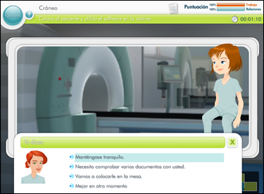

 |
|
De este modo, en el estado inicial puede que seas capaz de realizar ciertas interacciones, y en el siguiente estado ya no estén disponibles. A modo de ejemplo: si llamas a un paciente, se abre un nuevo abanico de interacciones relacionadas con el paciente (hablar con él, revisar su estado...). Es sencillo, no te preocupes. |